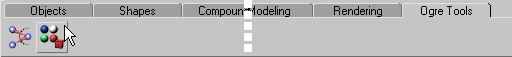
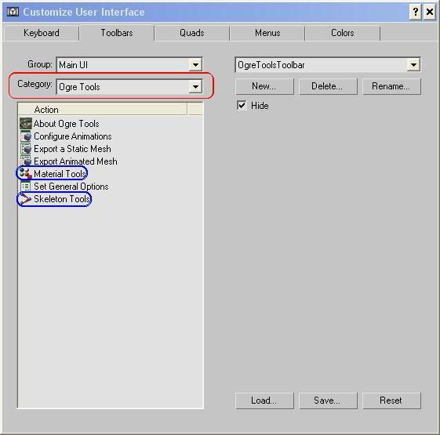

How to add button to toolbars in 3dsmax 5
OgreTools.CUI
The easiest way is to load the Ogre toolbar which can be found as a .CUI file in the UI directory.
Choose Customize menu > Customize User Interface > Toolbars tab.
Click on the Load Button and choose Ogretools.CUI
You should see something like that:

How to customize user interface
It is very easy to add new toolbars in 3dsmax.
First, you can search "Toolbars Panel" in the "User Reference" help and choose the first result.
So, to create an Ogre Tools toolbar, Choose Customize menu > Customize User Interface > Toolbars tab.
And choose Ogre Tools in the "Category" dropdown:

And choose only items in blue squares.
Ok, it's short. If you want something with more details, mail me at mallard@iie.cnam.fr.
Return to mesh export tutorial